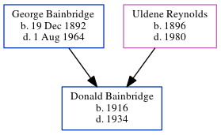

Elgie Cleatious Netterfield 1893 -
[ Home ] | [ Calendar ] | [ Surnames Index ] | [ Errors ] | [ Family History ]Elgie Netterfield, the husband of Ida Louise Bainbridge (the third cousin three-times-removed on the mother's side of Nigel Horne), was born in Kingsland, Indiana, USA on 13 Jan 18931 and. He married Ida (with whom he had 1 surviving child, ) in Allen, Indiana, USA on 13 May 19111.
Citations
- United States Marriages - Findmypast
Media
Netterfield - Bainbridge - marriage licence
Indiana, Marriages, 1780-1992 Transcription - R_328067239
United States Marriages - FS/MAR/32853354/1
United States Marriages - R_328067239/1
United States Marriages - R_1072356118
Family Tree
Map
Generated by ged2site. Last updated on Jul 3, 2024